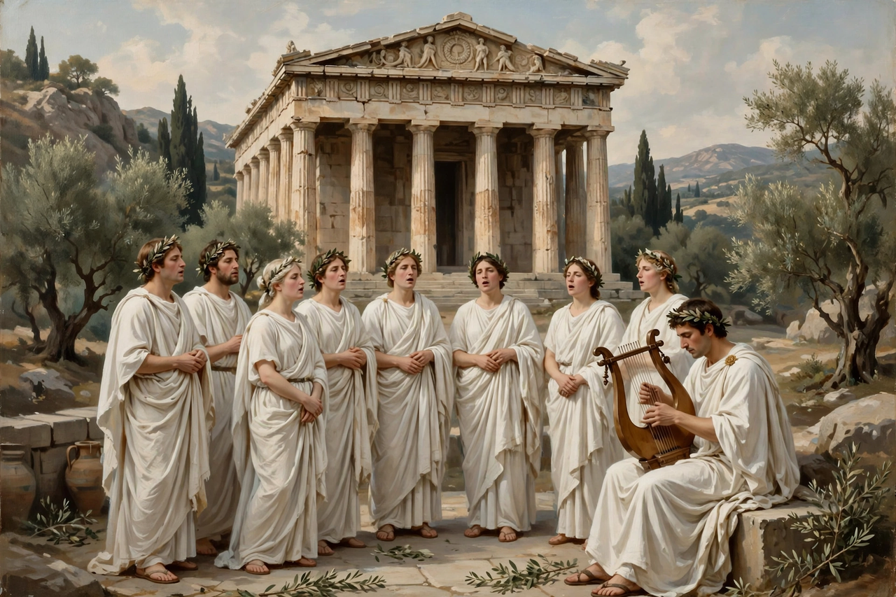

| Form | Lyric poem, typically addressed to a person, object or abstraction |
|---|---|
| Origins | Ancient Greece (from Greek ᾠδή, "song") |
| Major forms | Pindaric; Horatian; irregular (English) |
| Famous examples | Pindar's victory odes; Horace's Odes; Keats's "Ode on a Grecian Urn"; Shelley's "Ode to the West Wind" |
An ode (from Ancient Greek ᾠδή, ōdḗ, "song") is a type of lyric poetry, generally of a serious or meditative nature and formally elaborate in structure. Odes are typically written in praise of, or dedicated to, a particular subject. The form originated in the choral songs of ancient Greece and was transmitted to modern European poetry chiefly through Roman and Renaissance imitation.

Greek odes were sung and danced by a chorus.
The Greek ode reached its height in the epinician (victory) odes of Pindar, composed to celebrate winners at the great games. Written for choral performance with music and dance, Pindaric odes unfold in triads: a strophe and antistrophe in identical metre, followed by an epode in a different metre. Their mythic digressions, abrupt transitions and sublime diction were long taken as the essence of poetic inspiration.
Horace reshaped the ode for private reading: shorter, reflective poems in regular stanzas — Alcaic and Sapphic metres learned from Alcaeus and Sappho — addressing friendship, wine, mortality and the state with poised urbanity. The Horatian ode, quieter and more regular than the Pindaric, influenced poets from Ronsard to Andrew Marvell, whose "Horatian Ode upon Cromwell's Return from Ireland" (1650) is a masterpiece of the kind.
Abraham Cowley's "Pindarique Odes" (1656) introduced the irregular ode, with varying line lengths and rhyme schemes meant to mimic Pindar's freedom. The form flourished in the Romantic period: Wordsworth's "Ode: Intimations of Immortality", Shelley's "Ode to the West Wind", and John Keats's great odes of 1819 — "Ode on a Grecian Urn", "Ode to a Nightingale" and "Ode on Melancholy" — are among the most celebrated poems in English.